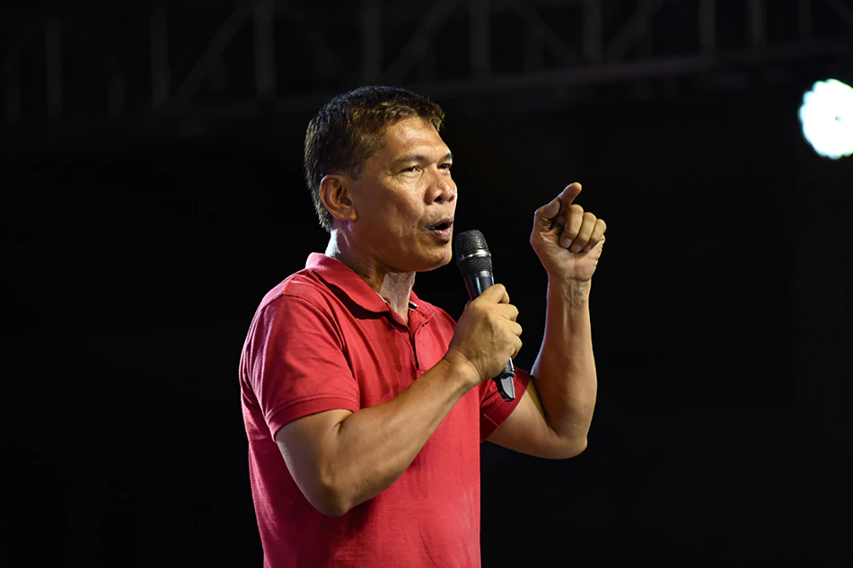

Labor leader vows to reverse Duterte policies
Mike Navallo, ABS-CBN News | Posted at Oct 29 2021 10:48 PM
MANILA — In an ideal world, labor leader Leody De Guzman says he would have an equal chance with other presidential aspirants to lay down his platform and campaign for the highest post in the land.
But the reality for now is that while De Guzman relies on social media and profusely thanks traditional media for covering his activities, his rivals are flooding broadcast and online platforms with millions of pesos worth of advertisements.
It’s a practice he hopes to change should he get elected president of the Philippines.
“‘Yung pagpapakilala sa mga kandidato, gawin ng gobyerno at ipagbawal ang paggastos ng mga kandidato nang sa ganun, ang pag-uusapan ay kredibilidad, track record at plataporma ng kandidato para sa bayan. Hindi pera-pera, hindi pasikatan. Para sa ganun ay magkaroon tayo ng gobyernong talagang maglilingkod at hindi magne-negosyo,” he told ABS-CBN News.
(The introduction of candidates should be done by the government and candidates should not be allowed to spend their own funds so that the focus will be on the credibility, track record and platforms of candidates for the country. Not money or popularity. This way, we can have a government willing to serve and not profit from public service.)
With no money, no machinery, and no established political name behind him, De Guzman is on an uphill battle but what drove the 62-year-old native of Oriental Mindoro to file his certificate of candidacy was the desire to highlight issues he had long fought for as a labor leader — ending contractualization, increasing workers’ wages and benefits for health care workers and ensuring the livelihood of fisherfolk and farmers.
“Madaling ipakulong si (President Rodrigo) Duterte. Madaling habulin si Marcos. Pero yung problema ng kahirapan ng ating mga magsasaka, yung kaapihan ng ating mga manggagawa, yung walang tigil na pagtaas ng presyo ng mga bilihin, yung biktima niyan ay 109 million na taong Pilipino. ‘Yun ang tingin ko na mas importante,” said the long-time labor leader who started organizing unions since he graduated in college in 1983.
(It’s easy to jail Duterte. It’s easy to go after Marcos. But the problem with poverty among farmers, the oppression of workers, the endless rise in prices of basic goods, is that 109 million Filipinos are the victims. That’s more important, I think.)
Labor-First Policy
One of the first measures De Guzman vowed to take should he win the presidency is to issue an executive order implementing a “Labor-First” policy by ending contractualization and raising the minimum wage of workers across the board to P750 per day, placing provincial workers on par with their Metro Manila counterparts.
On Twitter Friday, De Guzman chided fellow-presidential aspirant Manila Mayor Francisco “Isko Moreno” Domagoso for sidelining the issue of ending contractualization as the “least of his problems.”
Domagoso said what matters more is to immediately provide jobs, even if temporary.
De Guzman said Domagoso, who grew up among the poor in one of Manila’s districts but who now has a P70 million net worth, might have forgotten his roots.
“Ang trabaho ay dapat sapat at may dignidad. Di sila nagtatrabaho para payamanin lamang ang mga bilyonaryo, ginagawa nila ito upang buhayin ang kanilang mga pamilya. Magkasabay dapat na resolbahin ang kawalan ng trabaho, nakabubuhay na sahod at seguridad sa trabaho,” he tweeted
(Work should be sufficient and dignified. Workers do not work to enrich the billionaires but to raise their families. Unemployment, living wage and job security should be resolved together.)
Reallocating The Funds
De Guzman said he will limit Duterte’s Build, Build, Build projects and extensive borrowing.
The Philippines’ debt ballooned to P11.92 trillion by end of September this year, from only P5.9 trillion when the Aquino administration ended in 2016.
The heavy borrowing was partly due to Build, Build, Build projects and the Philippine government’s pandemic response.
This early, De Guzman is calling on the government to impose a 5-year debt moratorium and repeal a Marcos-era law that automatically appropriates a portion of the budget for debt servicing.
Under the 2022 proposed budget, more than P500 billion or 10% of the P5-trillion budget is allotted to paying debts.
De Guzman said this should be reallocated to the health sector and to health workers, noting that some of them have not even received their benefits under the Bayanihan laws.
“Pagkain lang, allowance lang, accommodation, hindi mabigay. Anong klaseng gobyerno ito? Mga kasama, dapat ‘yung pambayad utang, ‘yung napakalaking budget sa Build, Build Build ay ipihit muna para sa pagkain, para sa proteksyon ng ating mga health workers nang sa ganoon ay magkaroon tayo ng lakas upang labanan ang COVID,” he said.
(It’s just food and accommodation allowance, why can’t they give it? What kind of government is this? The funds allocated for paying debts, the big amount for Build, Build, Build, should be reallocated to food, protection for health workers so we can have the strength to fight COVID.)
He also said he will recalibrate the government’s “failed” pandemic response.
“Sa halip na mga medical experts ang ilagay sa posisyon para siyang magcommand laban sa COVID ay mga militar. ‘Yan ay isa kong babaguhin, na yung National Task Force Against COVID, i-ooverhaul ko, papalitan ko ng mga expert sa medisina, hindi expert sa pagbaril,” he said.
(Instead of medical experts, military personnel were placed in command. I will overhaul the National Task Force Against COVID and replace them with experts in medicine, not on shooting.)
Reversing Duterte's Policies
Among the Duterte policies De Guzman plans to reverse are the TRAIN and CREATE laws, the Anti-Terrrorism Act, and the war on drugs.
Under his presidency, the Philippines will rejoin the Rome Statute and cooperate with the International Criminal Court, even if it means arresting Duterte.
“Kung yan ay iuutos ng ICC, ng hukuman kahit dito sa ating hukuman, ipapaaresto natin si Pangulong Duterte. Panagutan niya ang kanyang kasalanan,” he said.
(If that’s the order of the ICC or even by a local court, I will order the arrest of President Duterte. He should answer for his offenses.)
The ICC authorized a full probe on the killings under the drug war in the country, although Malacanang continues to insist, it will not cooperate with the probe.
In contrast, he will order a review of the cases against detained Senator Leila de Lima and journalist Maria Ressa, and immediately grant ABS-CBN’s franchise.
“Ipag-uutos ko na i-review ang kaso ni Leila de Lima at kapag napatunayan na walang kasalanan, at ako’y naniniwala na walang kasalanan si Leila De Lima, naipit lang siya, ginamit yung mga nakakulong na mga tao na mga kriminal bilang witness para idiin si Leila de Lima,” he said.
(I will order the review of the case of Leila de Lima and [order her release] if proven she is innocent. I believe she is innocent. She got caught up and jailed criminals were used as witnesses against her.)
“Si Leila de Lima yung mukha ng kung anong klase ng gobyerno mayroon si Duterte, yung pagpersecute dito sa mga kalaban, sa mga tumutuligsa. Katulad din sa ABS-CBN, personal vendetta niya, personal benggansya niya,” he added.
(Leila de Lima is the face of the Duterte administration’s persecution of its enemies. Like the case of ABS-CBN, it was personal vendetta.)
Overhauling Electoral Prcoess, System of government
But beyond reversing Duterte’s policies, De Guzman dreams of changing the whole electoral process and the system of government.
He said he wants to clamp down on political dynasties.
“Dapat ‘yung mga pamilyang akusado sa pagnanakaw, akusado sa pagpatay atsaka yung sobrang gahaman sa pwesto na yung anak, apo, kulang na lang pati aso patakbuhin, dapat di na pinapayagan. dapat isa lang sa bawat pamilya,” he said.
(Families accused of stealing, of murder and those greedy for power that they will field their sons, grandchildren, even their dogs for a government position should not be allowed to run. There should only be 1 candidate per family.)
Fed up with a representative democracy where people only get to choose leaders once every few years, he wants the public to have direct participation in enacting policies by subjecting laws to referendums so that people can talk about it in every street and every village.
He also said he will remove the President’s power to appoint heads of constitutional commissions and even members of the Judiciary, the third branch of government.
Duterte is set to appoint 4 more Comelec commissioners, which would mean all 7 poll commissioners will have been his appointees by May 2022.
He will also appoint the heads of the Commission on Human Rights, whose previous chair Chito Gascon recently passed away, and the Commission on Audit, whose head Michale Aguinaldo wil be ending his term early next year.
This is on top of at least one associate justice appointee to the Supreme Court.
“Dapat magkaroon ng appointing body na represented ang bawat sektor ng ating lipunan nang sa ganun, matiyak na yung nakapwesto sa mga sensitibong pwestong yan ay maging truly independent at hindi maglilingkod sa interes ng nakaupong pangulo o dun sa partido niya,” De Guzman suggested.
(There should be an appointing body with representatives from every sector of society to ensure that those who will occupy sensitive posts will be truly independent and will not just serve the interests of the President or the party.)
Open to support Robredo
Despite his plans, De Guzman said he is still very much open to supporting Vice President Leni Robredo, more than any other fellow candidates for president.
“Si Leni, hindi naman siya enabler ni Pangulong Duterte. Hindi siya nagpagamit kumpara sa iba…Tumindig lang para sa masa nitong malapit na ang eleksyon, biglang naging oposisyon kay Duterte. Pero sa mahabang panahon, kasabwat sila sa war on drugs, sa lahat halos ng patakaran ni Duterte, tagapagtanggol sila,” he explained.
(Leni was not an enabler of the President. She did not allow herself to be used unlike the others. The others stood up for the masses only close to the elections. Suddenly they opposed Duterte. But for the longest time, they were accomplices in the war on drugs and they defended many policies of Duterte.)
“Ang sa akin lang talaga ay matiyak na di ito magagaya kay Cory na nangako ng land reform, di naman ipinatupad. Tulad ni Duterte nangako kontraktwalisasyon wawakasan, di naman natupad. E di kailangan niyang kumbinsihin ako, ang grupo namin na seryoso siya doon sa aming plataporma na nilolobby,” he added.
(My point is to ensure that this will not end up like former President Corazon Aquino’s promise of land reform, which she did not implement, or Duterte’s promise to end contractualization, which did not happen. She has to convince me and my group that she is seriously considering our platform.)
De Guzman said talks are on-going between his party, the Partido Lakas ng Masa, and representatives of Robredo on how they could work together on shared advocacies but the two have yet to personally meet to discuss.
Should talks prosper, he said he wouldn’t even ask for a position or anything personal benefit, in exchange for supporting Robredo.
“Hindi naman talaga ako pulitiko. Na-obliga ako dahil sa parang walang bagong mukha, walang bagong sinasabi, puro motherhood statements. ‘Yung mga iniaalok na kahilingan ng mga manggagawa, di pinapansin, 30 years, kahilingan ng mga magsasaka, di rin pinapansin,” he said.
(I’m not really a politician. I was obliged to run because there were no new faces, nothing new was said, all were motherhood statements. The pleas of the workers were never heard for 30 years. The pleas of the farmers were never listened to.)
De Guzman, who once ran and failed to secure a Senate slot in 2019, is running on a promise of new politics.
But will voters listen to him, this time?